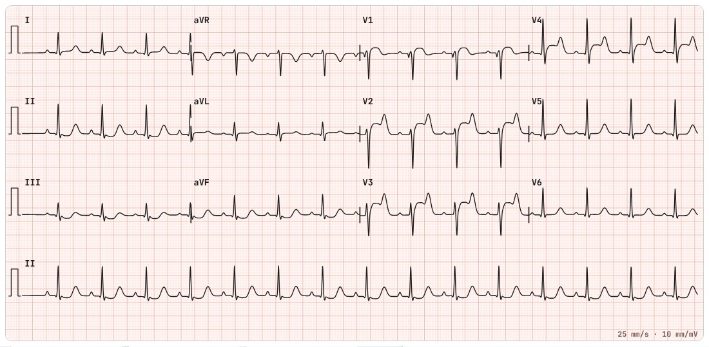
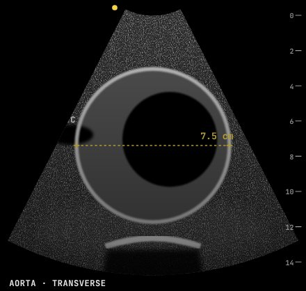
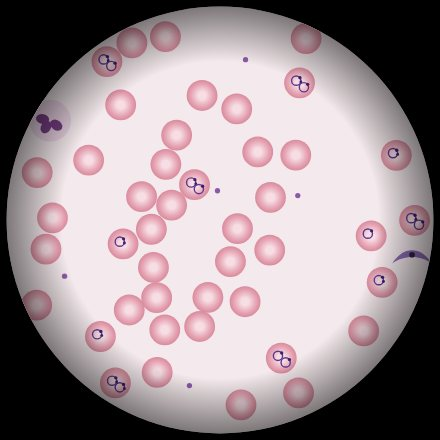
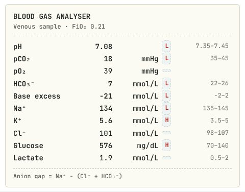

Zebra Shift articles
Read it yourself
Short guides to the pictures that come up on a night in the emergency department: ECGs, bedside ultrasound, microscope slides, blood gases and lab panels, and X-rays. Each one shows the finding, what to look for, and what it is often confused with.

ECG patterns to know25 pictures · 12-lead ECG patterns every emergency clinician should recognise, from STEMI and hyperkalaemia to torsades and Wellens, each with what to look for and what it is often mistaken for.
Bedside ultrasound signs14 pictures · Point-of-care ultrasound signs for the emergency department
Microscope slides to recognise20 pictures · Blood films, Gram stains, CSF preparations, joint fluid and urine microscopy
Blood gas and lab patterns15 pictures · How to read blood gases and lab panels in the emergency department X-ray findings to spot7 pictures · Chest and abdominal X-ray findings for the emergency department
X-ray findings to spot7 pictures · Chest and abdominal X-ray findings for the emergency department